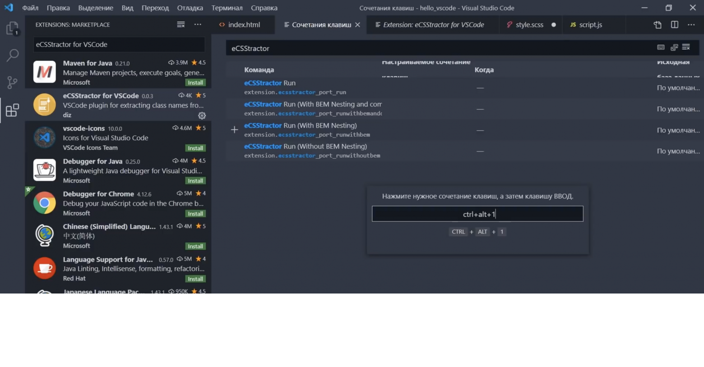

Порядок имеет значение в CSS.
Таким образом, окончательное определение конкретного правила CSS будет переопределять ранее определенные правила, когда CSS-селекторы и свойства совпадают. Именно поэтому таков custom.css (для переопределения заложенных свойст в бутстрапе, создается свой файл custom.css и ставится после bootstrap.min.css )ссылка должна следовать после bootstrap.css
<link rel="stylesheet" type="text/css" href="bootstrap.min.css">
<link rel="stylesheet" type="text/css" href="custom.css">>
Еще один важный момент, который следует иметь в виду при переопределении стилей bootstrap — это специфика CSS. Нам нужно будет использовать селекторы, которые столь же специфичны, как и те, что находятся в bootstrap.css. Использование селекторов, которые не являются конкретными, не даст вам желаемых результатов, так как компонент в конечном итоге будет принимать стили начальной загрузки по умолчанию, даже если мы написали пользовательские стили в custom.css Лучше всего использовать переопределения CSS для простых настроек Bootstrap, но мы рекомендуем вам попробовать метод SASS, когда речь заходит о создании обширных настроек. Смотри в сайт
Селектор- тег или класс тега, который форматируем
Каскадность
Пример, тот селектор который написан в файле стилей ниже = имеет преимущество - вот такая особенность. Чтобы придать приоритет есть свойство important (импотант), пример, <text-align: left: !impotant;>Вторая особенность - если мы например, напишем для параграфа <p style="color: red;">, то свойство будет исполнено, оно приоритетнее, чем в файле style.css
Третья особенность - чем точнее вы указываете например, не просто Li {}, а именно .menu Li {} как адрес не просто я нахожусь в Москве, а в Москве по адресу... , то и селектор сработает точнее даже если он и написан выше в файле css/
Соседние селекторы когда мы в CSS хотим обратиться к соседнеме элементу, то ставим + Пример: .heder + p {} в данном случае обращение к следующему за Хедором параграфу "Р" Пример .ul > li {} знак > указывает найти только дочерние вложения, когда у списка есть внучки и правнучки (т.е. еще один список в Li) и нам надо их оформить по другому Дополнительно для одной из страниц сайта можно сделать другой файл css и внедрить его только в нужную страницу Вам не стоит слишком привыкать к пикселам в качестве единиц измерения, поскольку во многих случаях будем использовать не их, а относительные единицы измерения (обычно это em [1em - размер шрифта по определению, а 2em - увеличит шрифт в 2 раза] и проценты). При рассмотрении того, как работают другие адаптивные веб-дизайны и где именно в них происходят изменения, нам понадобится удобная точка отсчета.
Порядок написания ОТ общего к часному. Следующая команда пишется под командой которая больше соответствует для всех разделов.
Порядок свойств
Объявления логически связанных свойств группируются следующим образом- Позиционирование
- Блочная модель
- Типографика
- Оформление
- Анимация
- Разное
Свойство display
Пишем Li ставим* и 5 далее нажимаем Таб или Энтер
- none (скрыть)
- blok (блочный)
- inline (строчный)
- inline_blok (строчно-блочный)
- talbe_cell (ячека таблицы)
- flex (гибкий)
Блочный элемент (display: block;)
создает разрыв строки перед тегом и после него. Он образует
прямоугольную область, по ширине занимающую всю ширину веб-страницы или блока-родителя,
если для него не задано значение width.
Блочные элементы могут содержать внутри себя элементы
любого
типа. Нельзя размещать блочные
элементы внутри строчных, за исключением элемента . Для блочных элементов можно
задавать margin (поля-отступы с наружи) и padding (поля внутри).
Свойства width и height устанавливают ширину и высоту области содержимого элемента. Фактическая
ширина элемента складывается из ширины полей (внутренних отступов), границ и внешних отступов.
Строчные элементы (display: inline;)
не создают блоки, они отображаются на одной строке с содержимым рядом стоящих тегов. Строчные элементы являются потомками блочных элементов. Они игнорируют верхние и нижние margin и padding, но если для элемента задан фон, он будет распространяться на верхний и нижний padding, заходя на соседние строки текста. Ширина и высота строчного элемента зависит только от его содержания, задать размеры с помощью CSS нельзя. Можно увеличить расстояние между соседними элементами по горизонтали с помощью горизонтальных полей и отступов.
Технология bem-разметки
BEM (Block-Element-Modifier) — это методология именования классов в CSS, которая используется для более эффективного и удобного написания кода. Она разбивает интерфейс на небольшие блоки, каждый из которых имеет свой собственный набор свойств и стилей. Задачи BEM: • структурирует HTML-разметку, делает её более читаемой и понятной; • уменьшает вероятность возникновения ошибок при написании CSS-кода; • упрощает поддержку и модернизацию кода; • повышает скорость разработки. Основные преимущества использования методологии BEM: • удобство разработки: BEM делает код читабельным и понятным, что упрощает поддержку и сопровождение проектов; • универсальность: этот подход может использоваться для различных архитектур веб-приложений, включая Single Page Applications (одностраничные сайты) и динамические сайты; • масштабируемость: возможность декомпозировать множественные компоненты веб-сайта на более мелкие части и переиспользовать их, что упрощает и ускоряет разработку и расширение проектов. Это помощник при работе с методологией BEM. Он умеет вставлять сразу новый элемент по методологии bem, учитывая родителя, учитывая блок. Может вставлять модификатор, помимо всего умеет формировать файл стилей, будь-то css или scss файл на основе bem-разметки в html коде. Попробуем. Нажимаем Alt+B+E, у нас вставился объект, учитывая класс родителя, клас блока. eCSStractor Плагин, который помогает копировать классы из html в css\scss\sass. Установим его и сразу создадим сочетания клавиш, чтобы делать все быстро. Переходим в Управление > Сочетание клавиш, ищем наш плагин eCSStractor, видим несколько команд. Меня интересует команда eCSStractor Run (With BEM Nesting). Нажимаем на команду, на плюсик, придумываем свободное сочетание Ctrl+Alt+1, нажимаем Enter, наши горячие клавиши присвоились.
Тестируем: переходим в наш html файл, выделяем блок с классами, нажимаем Ctrl+Alt+1, получаем сообщение, что наши классы скопировались.Переходим в файл стилей и вставляем. Видим, что все работает. Что делать, если нам нужно скопировать просто классы, но без BEM? Возвращаемся сочетания клавиш и нам нужно назначить сочетание Ctrl+Alt+2 например. Тестим, выделяем, вставляем. Готово, теперь у нас есть две комбинации клавиш — по BEM и без BEM. Начнем с Проводника, открыть его можно кликнув на иконку либо зажав Ctrl+Shift+E.
Схлопывания
Когда два или более вертикальных margin соприкасаются, они сливаются, при этом ширина общего
отступа равна ширине большего из исходных отступов. Слияние выполняется только для
блочных
элементов в нормальном потоке документа. Внешние
вертикальные отступы строчных, плавающих и абсолютно позиционированных элементов не
сливаются. Чтобы получить желаемый промежуток, можно задать, например, для верхнего элемента
padding-bottom, а для нижнего элемента — margin-top.
Существуют исключения для схлопывания:
Слияние выполняется только для
блочных
элементов в нормальном потоке документа. Внешние
вертикальные отступы строчных, плавающих и абсолютно позиционированных элементов не
сливаются. Чтобы получить желаемый промежуток, можно задать, например, для верхнего элемента
padding-bottom, а для нижнего элемента — margin-top.
Существуют исключения для схлопывания:
- с блоками, которым присвоено float;
- с основными элементами (html, body);
- для блоков, которым присвоено свойство и значение position:absolute;
- для строчных элементов.
Медиазапросы
Определение
Медиазапросы в CSS - это набор правил (запросов), которые позволяют адаптировать внешний вид веб-страницы под технические параметры устройства пользователя: ширину и высоту экрана и т.д. Любой медиазапрос - это условие, которое задается тому или иному стилю. Если условие выполняется, то стиль применяется, если нет - не применяется.Синтаксис @Media
Медиазапросы пишутся в самом низу CSS. В скобках () указывается min и max размер с которого запрос начинает работать. Важно соблюдать порядок:- 1-й @ ...800
- 2-й @ ...900
- 3-й @ ...1200
Псевдоклассы
::before -перед (так и переводится) содерж элемента
a::after (переводится как - после)